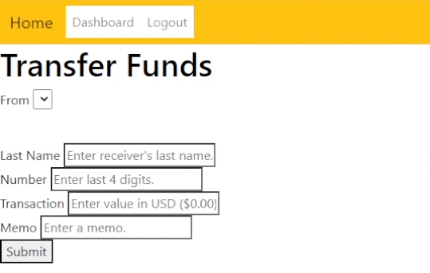

Bank Simulation Web Application
- Project Summary:
- Developed a web application simulating banking operations, covering the frontend, backend, and data layers. Utilized HTML5 and
CSS3 for markup and styling, JavaScript and jQuery for client-side scripting (with AJAX), PHP for server-side scripting on Apache, MySQL for data
storage, Git for version control
- Technologies Used:
- HTML, CSS, JavaScript, jQuery, AJAX, PHP, MySQL
- What I accomplished:
- Successfully designed and deployed a versatile web application simulating banking operations, covering frontend, backend, and data layers
- Orchestrated the implementation of secure user authentication with password hashing and error handling, ensuring data integrity
- Created a dynamic account management system, empowering users to create, manage, and interact with various account types
- Enabled deposit, withdraw, internal transfers, and external transfers
- Developed a transaction history page with filtering and pagination
- Executed a comprehensive transaction tracking system, recording and presenting detailed transaction histories for heightened financial
transparency
GitHub Repository